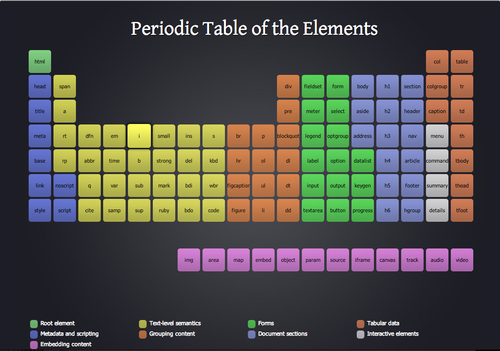
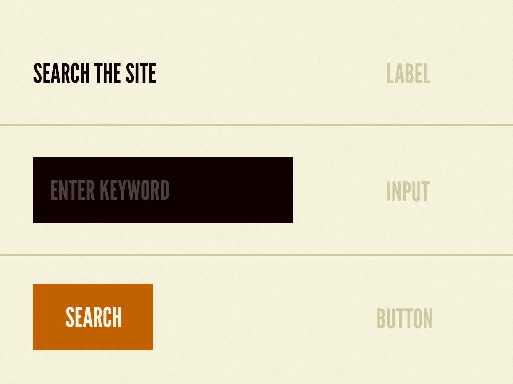
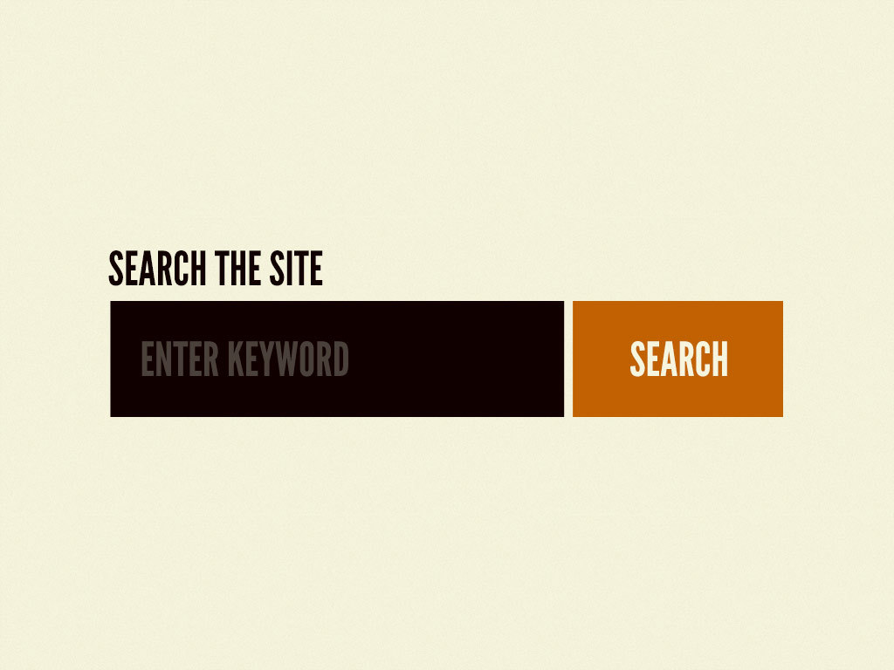

По мере того, как ремесло веб-дизайна продолжает развиваться, мы всe больше ощущаем нужду в продуманной, системной разработке, в отличие от создания простых наборов веб страничек.
Многое было сказано насчeт создания систем дизайна, и наибольший акцент делается, в основном, на установление цветов, типографии, сеток, текстур и т.п. Такой тип мышления, несомненно, важен, но я чуть меньше заинтересован в этих аспектах дизайна, потому что, по большому счeту, они всегда субъективны. В последнее время меня больше озадачил вопрос о том, из чего состоят наши интерфейсы, и как мы можем проектировать их более систематично.
В поисках вдохновения я возвращался к химии. Всe вещества (будь то твeрдые тела, жидкости, газы, простые, сложные и т.д) состоят из атомов. Атомы связываются между собой и образуют молекулы, которые, в свою очередь, комбинируются и формируют организмы. В конечном счeте так создается все вещество в нашей вселенной.
Аналогично интерфейсы состоят из меньших компонент. Это означает, что мы можем разбить интерфейсы на фундаментальные блоки и комбинировать их, постепенно наращивая сложность. Это суть атомного веб дизайна.

Атомы в природе — это основные строительные блоки материи. В контексте веб-интерфейсов атомы — это HTML тэги, такие как форма, поле ввода, или кнопка.

Атомы могут включать в себя даже более абстрактные элементы, такие как цветовые палитры, шрифты, или даже такие более скрытые аспекты интерфейса как анимации.
Как и атомы в природе, они довольно абстрактны и зачастую бесполезны сами по себе. Однако польза от их проектирования состоит в задании единого общего стиля интерфейса.
Всё становится интересней и ощутимей, когда мы начинаем комбинировать атомы. Молекулы — это совокупности связанных между собой атомов. Они имеют собственные свойства и играют роль скелета нашей системы дизайна.
Например — метка, поле ввода и кнопка не так уж применимы сами по себе, но могут быть действительно полезными, если их соединить.
